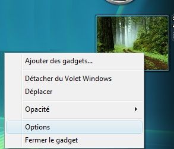

Bonjour à tous : vous avez, j'espère, tous entendu parler de ce nouveau système d'exploitation qu'est Windows Vista (Windows NT 6.0) ? Sinon allez ici :) . Bon : pour les autres, nous allons ici apprendre à développer un Gadget pour la Windows Sidebar !!!
Allez hop, au travail tout de suite les gars, nul besoin d'être un super programmeur pour y arriver (j'en suis la preuve ^^ ) et je vais bien sûr vous assister dans cette péripétie :p .
Voilà : vous venez d'acquérir Windows Vista et vous ne connaissez pas encore tout de votre nouveau système d'exploitation préféré ! Ne vous inquiétez pas, nous allons voir maintenant ce qu'est la Windows Sidebar ainsi que ses fabuleux gadgets ; regardez l'illustration ci-après :
Remarquez alors sur la droite une barre transparente, c'est la fameuse et toute nouvelle Windows Sidebar !
Cette barre permet avec le petit plus du haut (au-dessus de l'horloge) d'ajouter des... Gadgets comme ceci :
Il ne vous reste plus qu'à sélectionner un gadget et à le glisser sur votre Sidebar personnel.
Maintenant, regardez bien le gadget nommé GOOGLE Search au milieu et à droite, le gadget avec un logo Google, c'est celui que nous allons apprendre à réaliser tout de suite ;) .
Ne vous inquiétez pas, ce n'est que du langage HTML, du CSS et un peu de JavaScript : alors, voyons ça tout de suite...
Nous allons maintenant voir de quoi est formé un magnifique Gadget : ne vous inquiétez pas, un webmaster saura s'y retrouver très facilement. :)
Type de fichier
Description
Extension
Manifest
Contient les descriptions du gadget tels que l'auteur, son numéro de version...
nom.xml
Fichier HTML
Contient le code pour l'affichage et pour définir des pages supplémentaires
nom.html
Fichier des options
Permet de définir les options de votre gadget
Settings.html
Fichier Javascript
Permet d'interagir avec les événements utilisateur
nom.js
Images et feuilles de styles
Images à insérer et feuilles de style CSS
nom.png ou nom.css
Vous pouvez donc utiliser tous ces langages pour concevoir votre gadget ou encore utiliser du Flash et de l'Active X, mais je ne traiterai pas de cela ici pour des raisons de simplicité.
Allez, on attaque les choses sérieuses à la section suivante :pirate: .
Sous Windows Vista, cliquez sur le menu démarrer puis sur Tous les programmes, Accessoires et enfin Exécuter... (ou plus simplement, sur le bureau, appuyez sur les touches Windows + R).
Dans la fenêtre qui vient de s'ouvrir, collez cette ligne :
Faites OK (si Vista vous demande de confirmer, ne vous inquiétez, pas allez-y).
Vous arrivez dans un dossier vide, créez-en un nouveau à cet endroit nommé GOOGLESearch.gadget (ce dossier contiendra tous les éléments de notre futur gadget).
À l'intérieur de ce dossier, créez un fichier nommé gadget.html.
<html>
<head>
<title>Mon premier Gadget Google</title>
<style>
body {
width:130px;
height:87px;
}
</style>
</head>
<body>
<span id="gadgetContent" style="font-family: Tahoma; font-size: 10pt;">Mon premier Gadget Google !</span>
</body>
</html>
Bon : si vous vous êtes assoupis durant les cours de M@teo21 sur l'xHTML, il n'y a pas de problème, on ne le dira pas au patron :-° ! Allez : pour rappel c'est par là...
Maintenant créez un second fichier nommé gadget.xml et placez-y ce code à l'intérieur :
- L'image icon.png est en fait l'image qui apparaît dans le sélecteur de gadgets (voir l'illustration précédente).
- L'image drag.png correspond à l'image qui s'affiche lorsque vous sélectionnez le gadget et le déplacez jusqu'à votre Windows Sidebar !
Récupérez ces deux images et enregistrez-les dans un nouveau dossier nommé images que vous créez donc dans le dossier GOOGLESearch.gadget : la première étant icon.png et l'autre, ben... l'autre :lol: .
Vous vous demandez peut-être à quoi sert ce fichier XML ? À cela, il renseigne les informations sur votre gadget :
Et maintenant, après tant de sueur ? ;)
Eh bien vous venez de créer votre premier Gadget : F-E-L-I-C-I-T-A-T-I-O-N-S !
Alors allons le tester : je vous laisse aller dans votre Sidebar, puis cliquer sur le + en haut, sélectionner votre gadget nouvellement créé et le rajouter à votre Sidebar !
Voilà le résultat que vous devriez obtenir :
Mais... mais ce résultat ne me satisfait pas du tout, là :waw: !
Oui, bon, maintenant nous allons accélérer la manoeuvre alors, remplacez le contenu de votre fichier gadget.html par :
Il vous manque encore cette petite image que vous devez placer dans le dossier images, évidemment sous le nom logo.png :
Maintenant, votre Gadget doit ressembler à cela :
À présent, toujours dans le dossier GOOGLESearch.gadget, créez un nouveau dossier nommé js, puis créez un fichier nommé search.js et collez ce code à l'intérieur :
function search()
{
var moteur = System.Gadget.Settings.read("urlMoteur");
window.open(moteur+txtSearch.value,'window');
}
Ce code JavaScript se chargera d'ouvrir un navigateur avec le mot clé qui est à rechercher. ;)
Et maintenant que vais-je faire ?
Mettez à jour votre gadget comme expliqué précédemment, rentrez un mot clé et là, M-I-R-A-C-L-E, un navigateur web démarre avec le moteur de recherche Google par défaut, et en requête, le mot clé rentré précédemment.
Nous allons maintenant rajouter quelques options à notre gadget : continuons donc notre bonhomme de chemin ensemble...
Vous avez sûrement remarqué qu'en faisant un clic droit sur un gadget, il y a un bouton nommé Options :

Pour notre gadget, nous n'avons pas ces options, alors créons-les tout de suite : pour ceci, il suffit juste de créer un fichier nommé Settings.html que vous placez à la racine du dossier GOOGLESearch.gadget :
<html>
<head>
<style>
body
{ width:300; height:100;}
</style>
<script>
function init()//Initialisation du champ de texte
{
var temp = System.Gadget.Settings.read("urlMoteur");
if (temp != "")//On regarde si la variable existe
{
URL.innerText = temp;//si elle existe, alors on met dans la boîte de dialogue d'affichage le moteur de recherche entré
}
}
System.Gadget.onSettingsClosing = SettingsClosing;
function SettingsClosing(event)//On regarde les actions faites
{
if (event.closeAction == event.Action.commit)//Si le bouton OK de la boîte option est enclenché
{
System.Gadget.Settings.write("urlMoteur", URL.value);//On enregistre la valeur du champ URL dans urlMoteur
}
event.cancel = false;
}
</script>
</head>
<body onload="init()">
Changer de moteur de recherche :<br>
<input type="text" id="URL" length="100">
</body>
</html>
Bon : pour le code, il est commenté, donc ça devrait aller pour vous, je fais juste ici un récapitulatif du déroulement de l'algorithme.
Le body est affiché (affichage de : Changer de moteur de recherche) et exécute en même temps au chargement la méthode init() (correspond à : <body onload="init()">).
La méthode init() récupère l'urlMoteur défini dans le fichier gadget.html avec ceci mis par défaut "http://www.google.fr/search?q=". Comme la variable temp n'est pas vide, on écrit dans la boîte à options l'URL du moteur de recherche.
La fonction SettingsClosing(event) qui possède en paramètre un événement de l'utilisateur se déclenche lorsque la boîte d'Options est fermée : on teste alors l'origine de cette fermeture, et si elle correspond au bouton OK (if (event.closeAction == event.Action.commit)), on enregistre la nouvelle valeur rentrée par l'utilisateur.
Nous allons maintenant parler de la localisation. o_O o_O
Définition : cela correspond à la langue du système d'exploitation de l'utilisateur :D .
Si vous souhaitez distribuer à grande échelle votre Gadget, il faudra qu'il corresponde à des normes déterminées par Microsoft et qu'il s'adapte à la langue du système d'exploitation, parce qu'un gadget avec Mots clés ne plaira certainement pas à des anglophones :'( ...
Bon : pour les normes, nous avons déjà commencé en créant un dossier images en y plaçant les images, un dossier js qui contient nos fichiers JavaScript.
Maintenant, il faut créer un nouveau dossier à la racine de notre gadget nommé fr-FR : fr pour français et FR pour France ; en Belgique, cela sera fr-BE, et ainsi de suite...
À l'intérieur de ce dossier, nous allons insérer notre fichier gadget.html. :lol: Voilà pour les français !
Pas compliqué direz-vous ; alors, pour les américains, c'est quasiment la même chose, créez un nouveau dossier en-US à la racine de votre gadget, copiez-collez le fichier gadget.html et maintenant, traduisez-le (rien de difficile dans notre cas de transformer mots clés en key words dans le body).
Pour résumer tout cela :
Nous en avons donc maintenant terminé pour les explications !
Voilà : je suis ravi de vous avoir fait partager mon petit savoir et j'espère que ce tutoriel vous aura servi pour créer vos propres gadgets. :soleil:
Pour vous inspirer, vous pouvez aller également ici ou encore là pour proposer vos Gadgets !
N'hésitez pas à me poser des questions ou dirigez-vous sur le forum. :)